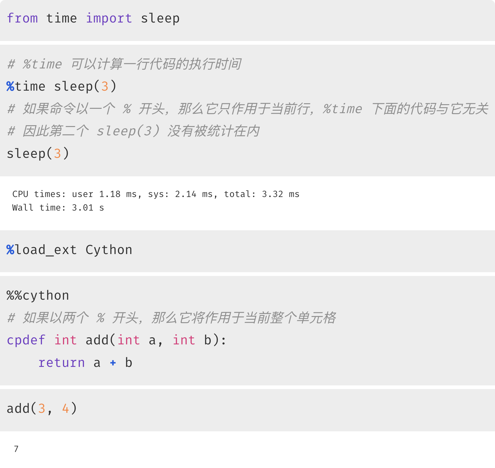
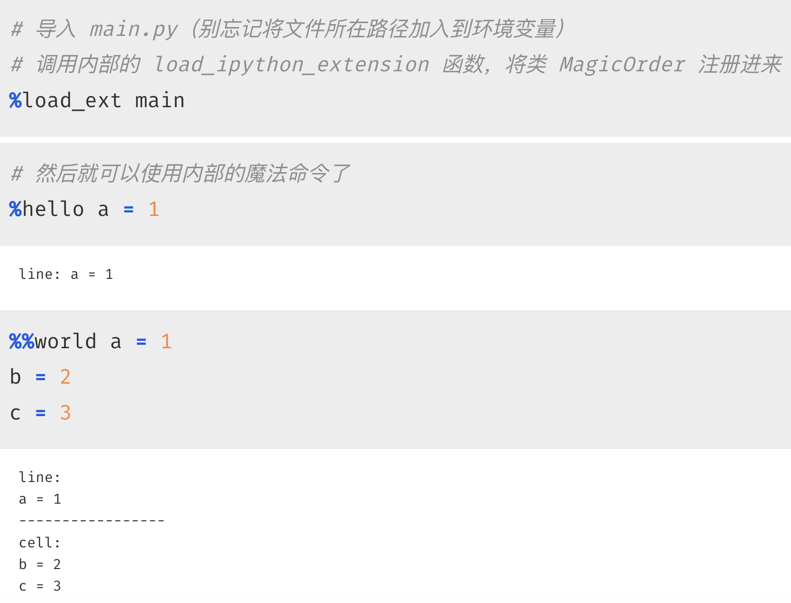
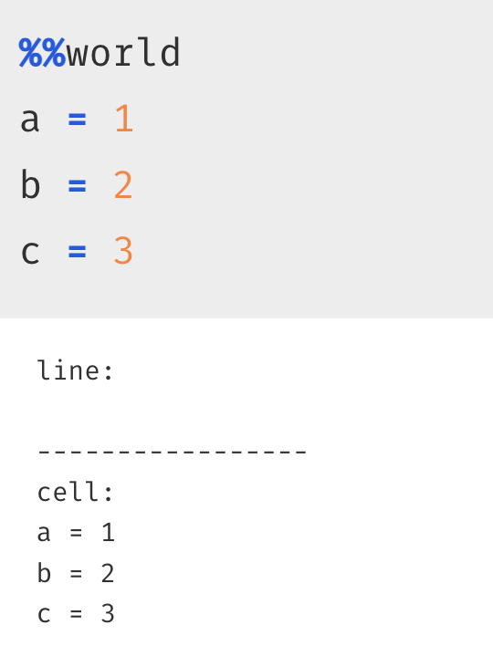
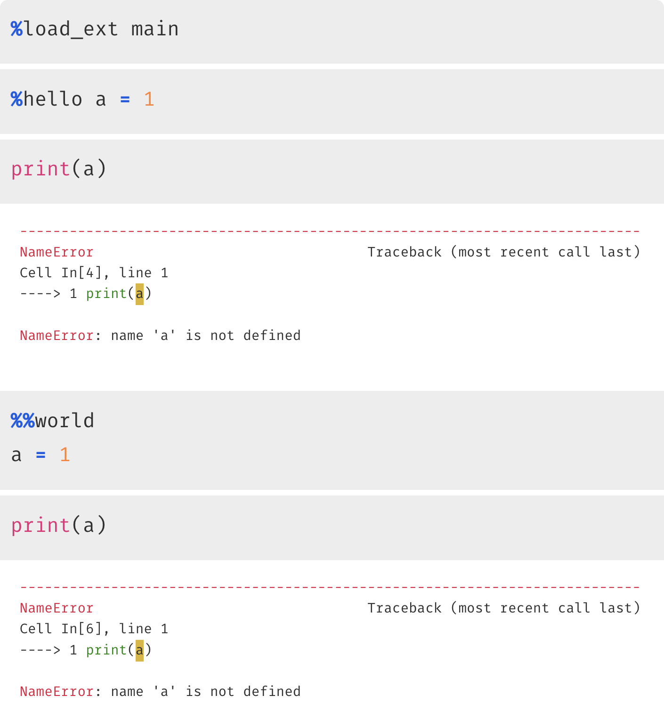
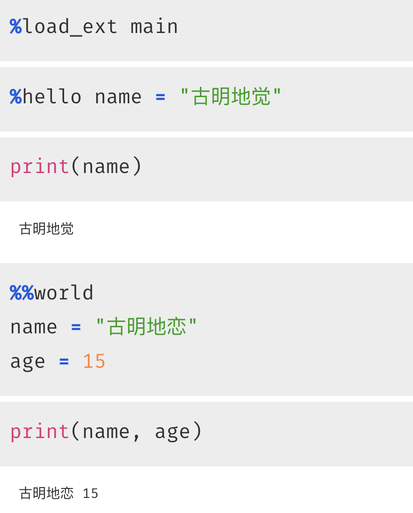
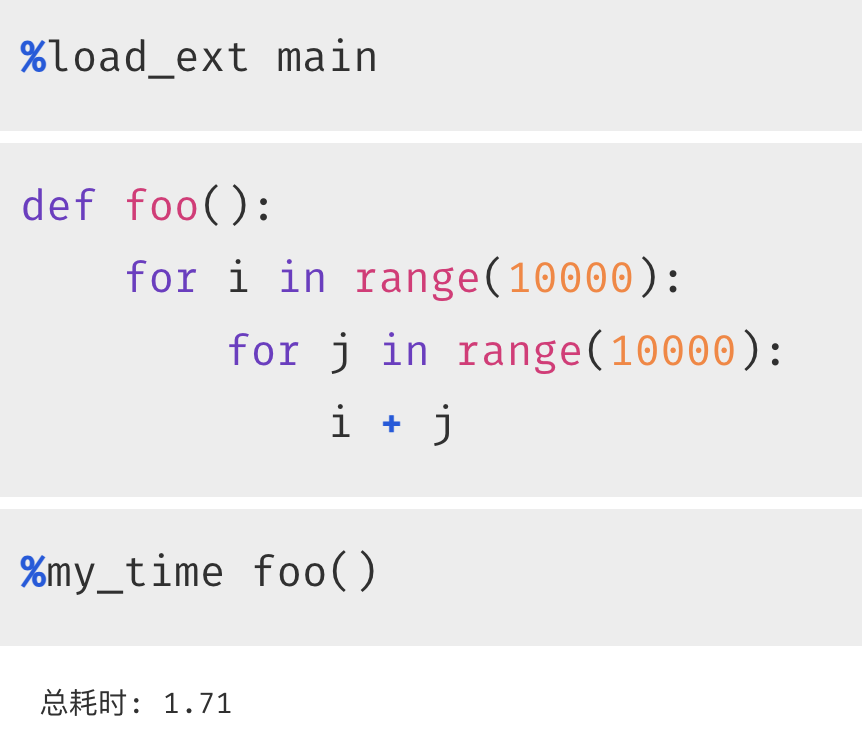
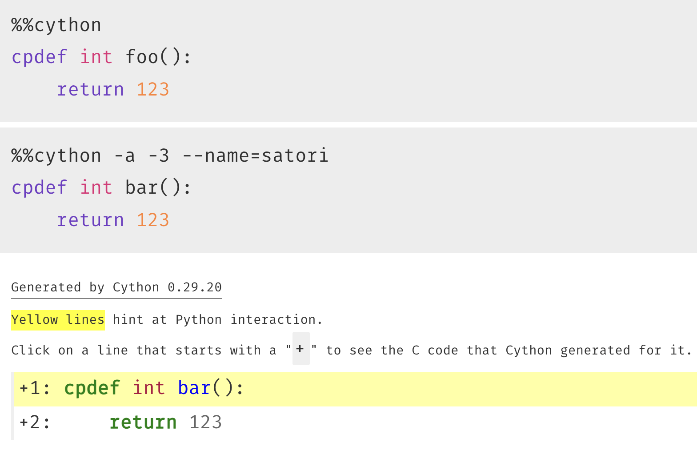
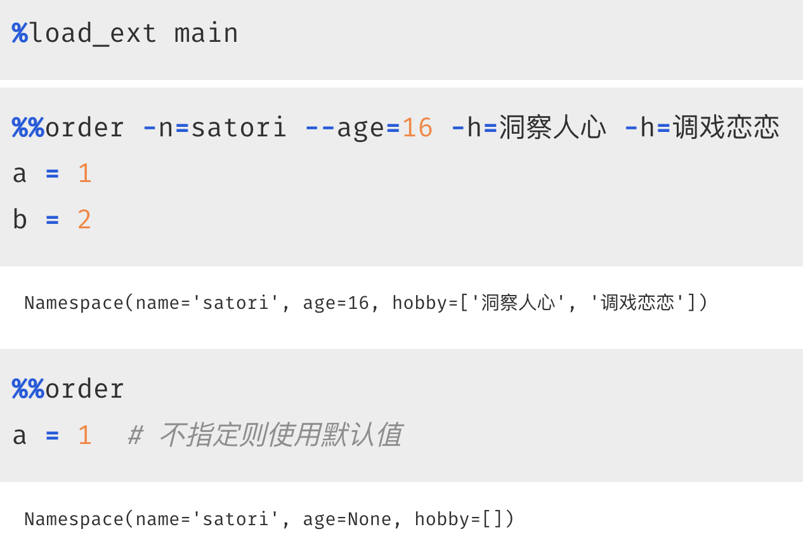

相信大家都用过 jupyter，也用过里面的魔法命令，这些魔法命令都以 % 或者 %% 开头，我们举个例子。

用法还是比较简单的，但是我们能不能自定义魔法命令呢？毫无疑问是可以的，因为上面的 %%cython 就是 Cython 模块自定义的。
所以命令可以是 jupyter 内置的，比如 %time，直接拿来就能用；还可以是第三方模块里面的，在 jupyter 通过 %load_ext 加载之后，再嵌入进来。下面就来看看如何自定义魔法命令。
from IPython.core.magic import (
magics_class,
Magics,
line_magic,
cell_magic
)
@magics_class
class MagicOrder(Magics):
"""
自定义一个类，类名叫什么无所谓
但要继承 Magics，并且要被 magics_class 装饰
"""
@line_magic
def hello(self, line):
"""
在 jupyter 中就可以使用如下命令，比如：
%hello <Your Code>，然后就会调用这个 hello 方法
参数 line 就是 %hello 后面的代码
"""
print(f"line: {line}")
@cell_magic
def world(self, line, cell):
"""
在 jupyter 中就可以使用如下命令，比如：
%%world
<Your Code>
<Your Code>
...
然后就会调用这个 world 方法
参数 cell 就是 %%world 下面整个单元格的代码
然后还有一个参数 line，它表示 %%world 所在行后面的代码
但对于 %% 开头的命令来说，我们一般都会新起一行，然后写代码
所以 line 这个参数暂时用不到
"""
print(f"line: \n{line}")
print("-----------------")
print(f"cell: \n{cell}")
# 必须定义 load_ipython_extension 函数
# %load_ext 本质上也是加载一个模块，但它会自动调用该函数
def load_ipython_extension(ip):
# 在函数内部，我们将类 MagicOrder 注册进去
# 然后就可以使用它内部的魔法命令了
ip.register_magics(MagicOrder)
# 如果不定义此函数，那么使用 %load_ext 加载时会报错
# The xxx module is not an IPython extension.
当前模块叫 main.py，我们来测试一下：

结果没有问题，但说实话对于 %% 开头的命令来说，我们很少会在它后面写代码，基本都是新起一行，就像下面这个样子。

自定义命令我们已经实现了，并且也知道怎么获取输入的代码了，下面要做的就是执行它。而将字符串当成代码执行，我们可以使用内置函数 exec。
@magics_class
class MagicOrder(Magics):
@line_magic
def hello(self, line):
exec(line)
@cell_magic
def world(self, line, cell):
exec(cell)
代码的其它部分不变，然后你觉得接下来调用魔法命令会执行成功吗？我们测试一下。注意：要重启内核。

神奇的地方出现了，虽然命令执行成功了，但执行完之后，告诉我们变量未定义。其实原因很好想，我们调用 exec 的时候没有指定名字空间，那么默认会影响 exec 函数所在的名字空间，即 hello 和 world 函数的名字空间。
当打开一个 jupyter 的时候，内部相当于启动了一个 shell，所以在调用 exec 的时候，应该将整个 shell 的名字空间传进去。
from IPython.core.magic import (
magics_class,
Magics,
line_magic,
cell_magic,
needs_local_scope
)
@magics_class
class MagicOrder(Magics):
@line_magic
def hello(self, line):
# 通过 self.shell.user_ns，可以拿到当前 shell 的名字空间
# 注意：包含所有的单元格
local_ns = self.shell.user_ns
# 在 local_ns 当中执行代码
exec(line, local_ns, local_ns)
@needs_local_scope
@cell_magic
def world(self, line, cell, local_ns):
# 或者通过 needs_local_scope 装饰器
# 这样在调用函数的时候，会额外传递一个 local_ns 参数
# 该参数和 self.shell.user_ns 等价
exec(cell, local_ns, local_ns)
def load_ipython_extension(ip):
ip.register_magics(MagicOrder)
然后再来测试一下：

此时就没有任何问题了。
下面我们模仿 jupyter 的 %time 命令，实现一个 %my_time，来加深一遍印象。
@magics_class
class MagicOrder(Magics):
@needs_local_scope
@line_magic
def my_time(self, line, local_ns):
start = time.perf_counter()
exec(line, local_ns, local_ns)
end = time.perf_counter()
print(f"总耗时: {round(end - start, 3)}")
测试一下：

结果没有问题，是我们想要的结果。
最后再来看看如何设置可选参数，举一个 Cython 的例子：

我们说对于以 %% 开头的命令，应该新起一行，在它的下面写代码。而之所以新起一行，是因为命令所在的行，要用于设置可选参数。那么问题来了，如何设置指定的可选参数呢？
from IPython.core.magic import (
magics_class,
Magics,
cell_magic,
needs_local_scope
)
from IPython.core import magic_arguments
@magics_class
class MagicOrder(Magics):
@magic_arguments.magic_arguments()
# 在 jupyter 中可以通过 -n=xxx 或者 --name=xxx
# 然后是 dest="name"，用于指定参数的名字
# 后续便可以通过 name 字段来获取该参数的值
@magic_arguments.argument(
"-n", "--name", dest="name", default="satori"
)
# "-" 和 "--" 可以只出现一个，并且默认解析得到的是字符串
# 而 age 我们希望是整数，所以指定 type 为 int
# 解析完参数之后，会自动调用 int 进行转化
# 如果不指定该参数，则使用 default
# 而这里没有 default，那么结果就是 None
@magic_arguments.argument(
"--age", dest="age", type=int
)
@magic_arguments.argument(
"-h", "--hobby", dest="hobby", default=[],
action="append"
)
@needs_local_scope
@cell_magic
def order(self, line, cell, local_ns):
# 显然 line 就是可选参数，cell 就是代码块
exec(cell, local_ns, local_ns)
# 解析参数
args = magic_arguments.parse_argstring(self.order, line)
# 打印
print(args)
def load_ipython_extension(ip):
ip.register_magics(MagicOrder)
我们测试一下：

还是很简单的，而且这里的参数解析和 argparse 模块非常类似，可以自己看一下。